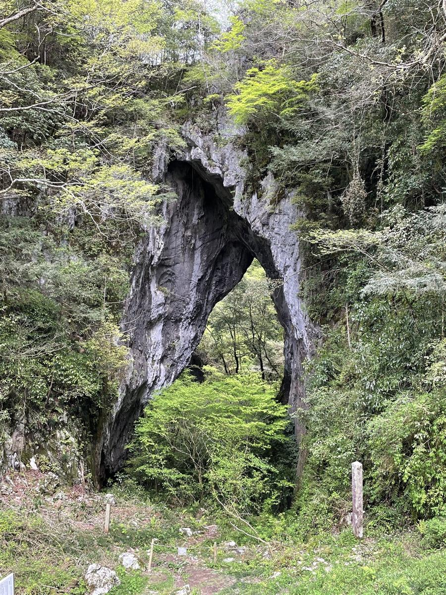
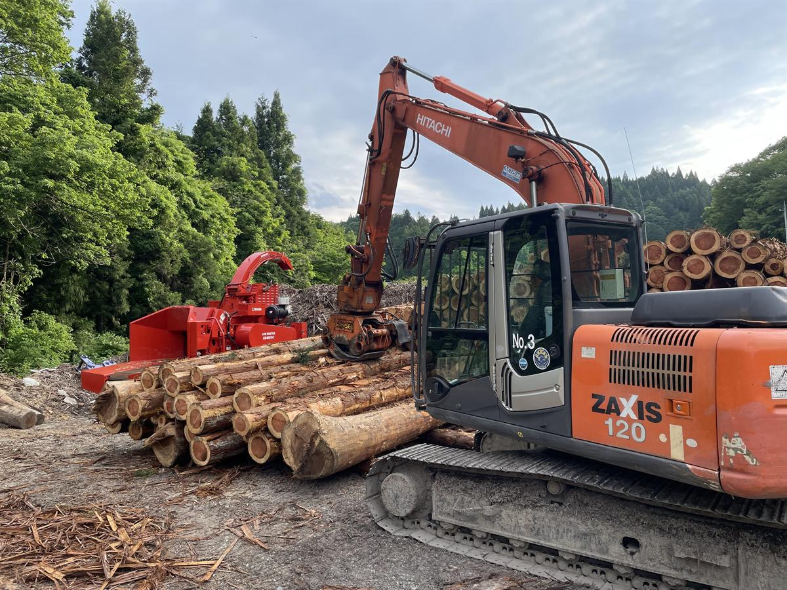
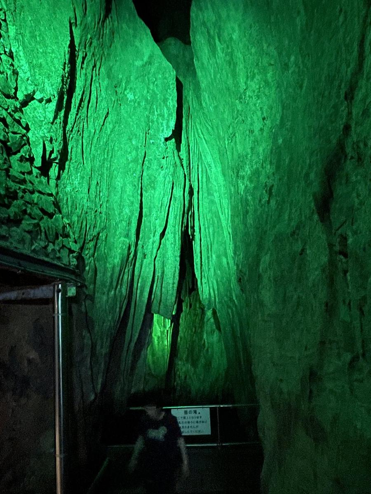
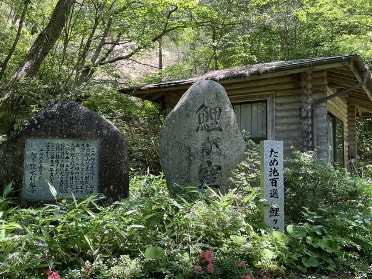
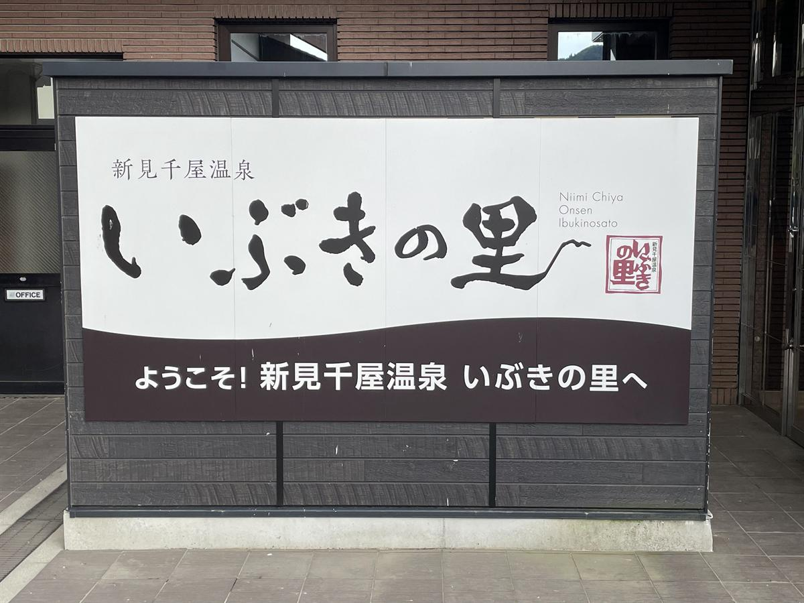

なぜ山の中腹に人が住むのか
谷底に平地があるのに、集落は斜面の途中と山の上にある。
谷底
平地は帯のように細い。両側から山が迫り、冬は日が差す時間が短く、冷気がたまる。鉄道と国道と市街地は、ここに集まっている。人が住む場所というより、通る場所だった。川沿いに神社が点在する。
中腹の緩斜面
侵食から取り残された古い平坦面。透水層と不透水層の境から水が湧く。集落はこの線に沿って並ぶ。日照と水と、崩れにくさが同時に揃う高さ。
石灰岩の台地
山の上が、平ら。畑が開け、家が建ち、その真下に鍾乳洞が伸びている。地表に川がない代わりに、水は地下を流れている。
中国山地は、いちど平らに削られた大地がまとまって持ち上がり、その上を川が刻んでできている。だから山の高さは揃っているのに、谷だけが深く狭い。新見市域の谷底は幅が数百メートルしかない場所が多く、氾濫原としてまとまった耕地を取りにくい。国土地理院 5mメッシュ
斜面の途中には、削り残された古い平坦面が段のように残っている。さらに、石灰岩や礫層と、その下の水を通さない層との境目に沿って、湧水が線状に並ぶ。飲み水と、崩れにくい足場と、冬の日照。この三つが同時に成り立つ高さが、だいたい標高280〜380メートルの帯だった。通説／要検証
そして決定的なのは、生業のほうが山にあったことだ。砂鉄も、木炭の原木も、牛を放つ草地も、焼畑の斜面も、すべて谷底ではなく山の側にある。人は平地を諦めて山に登ったのではなく、仕事のある場所に住んだ。新見市史 通史編
つまりこの土地では、標高が「不便さの度合い」ではなく、「何で食べているか」を示している。以下の各節は、その生業を一つずつ見ていく。— 図1 参照
石灰岩の台地
山の上が平らで、その下が空洞になっている。
阿哲台の石灰岩は、もとは遠い海の底にあったサンゴ礁だ。海洋プレートに乗って移動してきた海山の頭が、日本列島のもとになる地層に押しつけられて剥ぎ取られ、そのまま山の材料になった。約2億5千万年前、ペルム紀のものとされる。日本地質学会／秋吉帯
石灰岩は雨水に溶ける。だから地表には、すり鉢状のくぼみ（ドリーネ）が点々と残り、水は川をつくらずに地下へ抜けていく。抜けた水が横に削った跡が、井倉洞や満奇洞といった鍾乳洞になった。台地の上に立っているとき、足の下は空洞である可能性がある。新見市観光課
その空洞が崩れた場所もある。羅生門は、陥没したドリーネ群にできた高さ40メートルの天然橋で、鍾乳洞の天井が落ちたあとに残った部分が門のように立っている。第一門から第四門まであり、1930年に国の天然記念物に指定された。地下の空洞が地表に露出した現場である。新見市

その名は、門の形をしているからついたのではない。垂れ下がった苔を羅（薄い衣）に見立てたという説と、芥川龍之介の同名の作品を思わせる雰囲気からという説がある。諸説あり
この石灰岩は今も掘られている。セメント、製鉄の副原料、化学工業の材料として運び出され、新見の基幹産業であり続けている。山の形が変わるほどの規模で、産業が地形を書き換えている場所でもある。県統計・概況
鉄の山
山を崩して砂鉄を採り、山を焼いて炭にした。
中国山地の花崗岩は風化して真砂になり、そこに砂鉄が含まれている。鉄穴流し——山を人力で崩し、水路に流し、比重の差で砂鉄だけを沈めて選り分ける方法——は、この地質があって成り立つ技術だった。新見市史 通史編
製鉄には木炭がいる。一回の操業で使う炭の量は膨大で、そのために山は炭焼きのための資源として管理された。砂鉄を採る人、炭を焼く人、運ぶ人。山の中に人が住み続ける理由が、ここで経済として成立している。通説
副作用も地形に残った。崩した土砂は川へ流れ、下流の河床を上げ、洪水の性格を変えた。逆に、削り残された小山（鉄穴残丘）や、埋め立てられた土地が新しい耕地にもなった。明治以降、洋式製鉄に押されてたたらは消えるが、地形は消えない。諸説あり
たたら製鉄は、映画『もののけ姫』に出てくるタタラ場のもとにもなっている。モデルとされるのは島根県雲南市の菅谷たたらで、新見と同じ中国山地のたたらである。1751年から170年にわたって操業し、いまは国の重要有形民俗文化財になっている。諸説あり
作中で鉄を作る側と山の側が対立するのは、物語のための設定ではない。近世以前の中国山地では、製鉄のために大量の樹木が伐採され、山の姿が変わることが実際に問題になっていた。この地方には金屋子神という製鉄の神の伝承も残っている。鉄の道文化圏
森を売る
たたらが終わったあと、山は二度、性格を変えた。そして今も変わり続けている。
たたらの時代、山は炭を採るための広葉樹林だった。二十年ほどで伐って萌芽させ、また炭にする。山は畑に近い感覚で回されていた。通説
燃料が炭から石油とガスに替わると、この循環は成り立たなくなる。代わりに戦後の拡大造林で、広葉樹を伐ってスギとヒノキが植えられた。四十年後に売れるという前提の投資だった。林野庁 森林・林業白書
その四十年後に来たのは、輸入材による価格の低迷と、山を持つ人の高齢化だった。植えたが間伐が追いつかない山が広がっている。一方で、木質バイオマスや加工の付加価値化など、別の売り方を探す動きもある。要検証／取材未了
拡大造林には、想定していなかった帰結もあった。1945年から二十年あまりのあいだに全国へ植えられたスギが、1970年代に入って一斉に花をつけはじめる。スギ花粉症が初めて確認されたのは1964年で、そこから患者は増え続けた。春に多くの人を悩ませているものは、この時期の造林政策の産物である。林野庁
林野庁は1991年から花粉の少ないスギの開発に着手し、2001年には発生源対策の方針を定めた。2033年度までにスギ人工林を約2割減らす目標を掲げている。植えた森を、こんどは減らす方向で管理することになった。林野庁 花粉発生源対策
新見市の森林面積は684.56平方キロメートル、市域の86.3パーセントにあたる。これは「自然が豊かだ」という話ではない。市域のほとんどが、誰かが植え、誰かが手を入れ、いずれ売ることを前提にした土地だという意味だ。新見市の概要
伐った木は、山からいきなり工場へ行くわけではない。まず伐採現場のふもとに集積される。これを山土場という。そこから林道で運び出され、輸送路の接点にある中間土場で、樹種・径級・長さごとに仕分けられる。長期保管の設備を備えたものは、土場のなかでもとくに貯木場と呼ばれる。林業用語／土場
この土場という場所は、観光の対象ではない。案内もなければ看板もない。けれど、山の上の人工林と、麓の町と、都市の材木市場が、実際につながっている地点はここしかない。— 図5 参照

「木を伐るのは環境に悪い」という言い方は、日本の人工林にはそのままあてはまらない。ここにある森は、植えて、育てて、伐って、また植えることを前提に作られた森だからだ。伐らずに置くと樹冠が閉じて林内が暗くなり、下層の植物が育たなくなる。地表がむき出しになった斜面は雨で土が流れ、大雨のときに崩れやすくなる。林野庁
世界で問題になっている森林破壊は、主に熱帯林の違法な伐採や開墾、焼畑によるものだ。伐ったあとに何も植えず、森が森でなくなる。日本の人工林で行われているのは、伐ったあとに植え直すことを前提とした収穫であり、別の話である。林野庁ほか
ただし、その「植え直す」が進んでいない。人工林の六割が利用期を迎える一方で、主伐のあとの再造林は、木材価格の低迷、造林費用の負担、担い手の減少によって滞っている。林野庁は「伐って、使って、植える」という循環を掲げているが、最後の「植える」がいちばん難しい。林野庁 再造林の推進
もうひとつ、この節に属するものがある。神社の境内に立つ大木だ。戦後の造林で山がスギとヒノキに置き換わっていくなかで、鎮守の森は伐採の対象から外れた。今も残るご神木は、その土地が本来どんな木を育てる土地だったかの、数少ない手がかりであり、同時に拡大造林の裏返しの証拠でもある。通説／新見市域では要確認
千屋牛
牛がいるから草地があり、草地があるから集落が続いた。
千屋は市の北部、鳥取県に接する標高の高い一帯にある。牛の系統の話は、しばしば一人の手柄のように語られるが、実際には二つの家系が別々の場所で関わっている。1772年ごろ、備中国阿賀郡の竹の谷で難波元助が優れた牛どうしの交配を始め、その子の千代平が「竹の谷蔓」と呼ばれる系統をつくった。千屋牛振興会ほか
千屋側でこれを受けたのが、豪農の太田辰五郎である。文政の末——1820年代——に大阪の天王寺牛市で但馬系の黒毛の牡牛を買い入れ、千代平から譲り受けた竹の谷蔓系の牝牛と交配して、優れた子牛を得た。つまり竹の谷と千屋は別の場所で、系統は移されてきたものだ。千屋牛 — 岡山県畜産史ほか
「竹の谷蔓」「周助蔓」「岩倉蔓」は日本三名蔓と呼ばれ、なかでも竹の谷蔓が最も古いとされる。ただし「黒毛和種のルーツ」という言い方には注意がいる。和牛の成立には複数の系統が関わっており、ここだけが起源というわけではない。観光的な語りと史実がずれやすい場所だ。諸説あり
牛は山だけの話でもなかった。1697年に新見藩を立てた関長治は、陣屋を置いて町を整備すると同時に牛市を開いている。山の草地で育った牛が、谷底の町で取引される。この土地では、標高の違う二つの場所が牛でつながっていた。新見藩
重要なのは、牛が農業機械であり、肥料工場でもあったことだ。山の草を刈って牛に食わせ、牛の糞を田に入れる。だから山の斜面には採草地が維持され、その手入れが景観を作った。牛が使われなくなると、草地は放置され、藪になり、山が下りてくる。通説
新見庄
中世の百姓の名前が、この土地には残っている。
中世、この一帯は京都・東寺が領した荘園「新見庄」だった。その運営記録が東寺百合文書としてまとまって残っている。国宝であり、ユネスコ「世界の記憶」にも登録された文書群だ。京都府立京都学・歴彩館
この文書群が特異なのは、支配する側の記録だけでなく、現地の百姓が書いた訴えや請文が含まれている点にある。年貢の減免を求める交渉、代官の不正への抗議、そこに書かれた個人名。中世の農村で、名前と言い分の両方が読める土地は多くない。東寺百合文書
なかでもよく知られているのが、1463年に起きた出来事だ。東寺から派遣されていた直務代官の祐清が、この地で殺害された。そのあと、祐清の身のまわりの世話をしていた三職の家の女性たまかきが、東寺に宛てて書状を送っている。遺品の目録を作り、葬儀にかかった費用を報告し、そのうえで形見として三点——白小袖、練絹、綿入れ——を求めた。東寺百合文書 ゆ函84号
中世の農村に生きた女性が自分で書いた文書として、これは数の少ないものだ。五百年前にこの山あいで暮らした人の、名前と、要求と、その理由が読める。京都府立京都学・歴彩館
荘園の開発が、山間部に人が入る一つのきっかけになったという見方もある。ただし現在の山腹集落と中世の集落がどこまで連続しているかは、慎重に扱う必要がある。要検証
その祐清とたまがきの像が、いま新見駅前の広場に立っている。駅を出てすぐ左手。五百年前にこの土地にいた代官と、彼の形見を求めた女性が、並んで置かれている。新見市
今の新見
人が減り、線路が残り、冬に雪が降る。
2005年、新見市・大佐町・神郷町・哲多町・哲西町が合併して現在の新見市になった。面積は793.29平方キロメートル、東京23区より広い。その86.3パーセントが森林で、人口は24,792人（2026年6月末）。1955年ごろの現市域の合計は6万人を超えていた。新見市／国勢調査
谷底には伯備線が通り、特急やくもが岡山と出雲市を結んでいる。山陰と山陽をつなぐ数少ない経路であることが、この谷の位置づけをずっと決めてきた。JR西日本
その伯備線が全通したのは1928年（昭和3年）10月25日で、新見駅もこの日に開設された。同じ年の7月には、岡山側と米子側から進んできた機関車が現在の新見市金谷で連結する式典が行われている。人が谷底に集まるようになったのは、この百年ほどのことでしかない。伯備線／新見駅
冬には雪が降る。北部の千屋や神郷では積雪が一メートルに達する年もあり、標高と緯度のわりに寒い。谷底に冷気がたまる地形が、そのまま暮らしの条件になっている。気象庁 平年値ほか
人が減っている一方で、国道沿いには店が並んでいる。日本の地方都市の多くで、商業の中心は駅前の商店街から、車で行ける国道沿いへ移った。新見でも買い物の場所は駅前ではなく、国道180号の沿線にある。通説
谷底は、人が住む場所ではなく通る場所だった。その構図はいまも変わっていない。人が住むのは山の側で、谷を通るのは川と国道と線路で、その通り道の脇に店が集まっている。
見た場所
第1部で書いた話を、実際に見られる場所。行った場所を実線の枠で、まだ行っていない場所を破線の枠で並べる。
ここから先は、行けば見られるものの話になる。ただし網羅はしない。三年のあいだに実際に立った場所のうち、名前を控えていたものだけを並べる。実線＝行った／破線＝行っていない



井倉洞・井倉峡 石灰岩の台地
全長1,200mの鍾乳洞。1957年ごろ、大理石の採掘調査の最中に見つかり、1959年から公開された。洞内に高さ50mの「地軸の滝」。岡山県指定天然記念物。掘って売るための調査が、観光地を見つけたという順序が、この土地らしい。
夏でも中は涼しくて快適だった。場所によっては寒いくらい。
満奇洞 石灰岩の台地
全長約450m。もとは地名の「槇（まき）」から槇の穴と呼ばれていた。1929年に与謝野鉄幹・晶子夫妻が訪れ、「奇に満ちた洞」と詠んだことから満奇洞になった。
貧弱な私は上り坂の上にある入り口にたどり着くのが少々大変だった。
羅生門 石灰岩の台地
1930年に国の天然記念物、2007年に日本の地質百選。陥没したドリーネ群にできた高さ40mの巨大な天然橋で、第一門から第四門まである。鍾乳洞の天井が崩れ、残った部分が橋として立っている。地下の空洞が地表に露出した現場そのもの。
想像していたよりも立派だった。周辺の散歩道も風情あり。
山土場・伐採の現場 森を売る
観光地ではない。案内も看板もなく、普通は入れない。友人が林業をしているため見せてもらった場所で、このサイトで唯一、他では読めない部分になる。
普段見ることのできない現場を見れてとても興味深かった。
鯉が窪湿原 山と水
哲西町矢田、標高約550m。国指定天然記念物で「西の尾瀬」と呼ばれる。北方系・大陸系の遺存植物を含む300種以上の動植物。オグラセンノウ、ビッチュウフウロなど。一周およそ60分。
名前の通り池に鯉がいた。餌をあげた。週末に行ったがほとんど人がおらず。季節によっては花が咲きほこっていそうだが、行ったときはあいにく。ゆっくり散歩するのにお勧め。
大佐山 山と水
中腹にオートキャンプ場があり、ダム湖でカヌーができる。渓谷のシャワートレッキングなども。
ダム湖でカヌーに乗った。中州の島で自分たちで火打石で火をおこしインスタントコーヒー。何とも贅沢な時間だった。まっちゃんさん元気かな。
済渡寺・白龍門 町と歴史
78基の白い鳥居が全長86mにわたって並ぶ。弘法大師とともに唐から渡ってきた白龍に由来し、鳥居には桃の彫刻が入っている。白龍が唐から桃を持ち帰ったという伝承による。6〜7月はあじさい。
お寺に鳥居があるのは違和感があったが、「白龍門」という名前から鳥居ではなく門だということで納得した。友人からの裏話ではとある会社の会長が道楽で作ったものだとか。
新見千屋温泉 いぶきの里／神郷温泉 千屋牛
いぶきの里は千屋花見。単純アルカリ泉で、千屋牛が食べられる。徒歩圏にスキー場。所在地の「花見」は、市の最高峰・花見山（1,188m）と同じ地名。
露天風呂もあり本当に気持ちよかった。
チョウザメ養殖・キャビア 石灰岩の台地
高梁川水系の清流とカルスト台地の地下水で、8〜10年かけて育てる。年産60〜80kg。石灰岩に濾された水が、海のない土地でキャビアを可能にしている。
ここはかなりお勧め。なんでこんな山奥でチョウザメ養殖？みたいな疑問から色々教えてくれる。キャビアも試食したし、逆にチョウザメにかじられたり。
鳴滝（遠望） 山と水
三段、約30m。静かな日には2kmほど離れた麓の集落まで音が届いたことから「鳴滝」と呼ばれる。
近くまでは行っていない。
国道沿いの神社 名称未確認
川沿いの、こじんまりとした神社。大きな木がご神木として立っている。谷底の高さにある。
名前を確かめないまま通り過ぎた。とにかく立派な木が印象深い。
JR新見駅 今の新見
伯備線・姫新線・芸備線が集まる駅。
周辺にはお店はあまりない。A級グルメ押しの大きな看板が印象的。
道の駅 鯉が窪 千屋牛
千屋牛の冷凍肉ほか特産品が買え、野菜市場が併設されている。
たまがきと祐清像 新見庄
新見駅前の広場、駅を出てすぐ左手に立っている。五百年前にこの土地にいた二人の像で、友人の迎えを待つあいだ、名前を知らないままその近くに立っていた。この街でいちばん古い物語は、資料館ではなく駅前にある。
ほか多数
ここに挙げたのは、名前を控えていた場所だけである。実際にはもっと多くの場所に立ち寄っている。食事をした店、友人に連れて行かれた道端、名前を知らないまま通り過ぎた眺めのいい場所。記録に残っていないというだけで、行っていないわけではない。
まだ見ていない場所
ずいぶん行ったつもりでも、新見はまだ広い。
三年通っても、行っていない場所のほうが多い。とくに町と歴史はまるごと空白で、御殿町にも美術館にも一度も降りていない。次回行くときに検討しよう。破線＝行っていない
新見御殿町 新見庄・今の新見
1697年に関長治が陣屋を置き、整備した町。藩校の思誠館もここにあった。1792年には丸川松隠が学頭として招かれ、備中松山藩の山田方谷もここで学んでいる。
御神幸武器行列（土下座まつり） 新見庄・今の新見
毎年10月15日、船川八幡宮の秋季大祭。1697年、初代藩主 関長治の初入部行列に由来するとされる。白熊の槍・長刀・鉄砲・弓などを持つ64人が進み、観衆は座って見送る。1974年に市重要無形民俗文化財。
夢すき公園（親子孫水車・紙の館） 森を売る
神郷下神代。親13.6m・子6.0m・孫4.5mの三連水車は日本一。1991年に親子を設置し、1992年に熊本へ一位を譲り、1999年に孫車を足して奪い返した。紙の館では神代和紙の紙すきができる。
備中国新見庄たたら製鉄体験学習 鉄の山
市が実施している。鉄の節を書いておきながら、まだ体験していない。
宇山洞／御洞渓谷／三室峡／夏日の滝／おおさ源流公園 山と水
御洞渓谷は5月にシャクナゲ、秋に紅葉、真冬には高さ10mに達する氷柱が見られることもある。三室峡もシャクナゲの群生地。
新見美術館／城山公園／寺社ほか 町と歴史
新見美術館は1990年開館、1,300点以上を所蔵。大椿寺、東前寺、若山牧水歌碑・二本松公園、戸田家住宅主屋など。
布原駅／岩山駅／矢神駅 今の新見
新見駅には降りたが、市内の他の駅にはまだ行っていない。
食べるもの・持って帰るもの
土産物探しも、毎回の楽しみのひとつ。
新見市は「A級グルメ」を掲げていて、ふるさと納税のサイトは「A級の誇り」という名前で運営されている。並んでいる品を見ていくと、宣伝の言葉というより、この土地の地面と産業の一覧表になっていることに気づく。A級グルメフェア／新見市
千屋牛
← 山の草地から
日本三名蔓のひとつ竹の谷蔓の血をひく。飼育頭数が少なく、岡山県外ではあまり流通しない。
ピオーネ
← 石灰岩のカルスト台地から
標高400〜500mの石灰岩地帯が中心。水はけがよく、昼夜の寒暖差が大きい条件が、粒の大きな果実をつくる。岡山県は栽培面積で全国一位。
キャビア
← カルストの地下水から
高梁川の清流とカルスト台地の地下水で、8〜10年かけて育てたチョウザメから採る。年産60〜80kg。無添加・低塩分・非加熱。
ピオニーポーク
← 哲多の里山から
哲多町の荒戸山で育てられるSPF豚。名前のピオニーはピオーネではなく牡丹で、赤身に入った白い脂肪が牡丹の花のように見えることに由来する。
ヒノキ製品
← 森を売る
積み木など。市域の86.3%を占める山から出てきて、手に持てる大きさになったもの。
神代和紙
← 山の水と楮から
神郷下神代に伝わる和紙。夢すき公園の紙の館で、紙すきの体験ができる。
豆餅
← 谷と斜面の田から
新見産のもち米、ヒメノモチ・キヌムスメを使う。
ワイン・白桃
← A級グルメの一覧から
千屋牛・ピオーネ・キャビアと並んで挙げられる。生産者は未確認
にーみん関連グッズ
← この土地のぜんぶから
新見駅前の観光案内所で買える。キーホルダー、ハンカチ、トートバッグ、ぬいぐるみなど。岡山の廣榮堂と組んだ「にーみんきびだんご」もある。新見市観光協会ほか
にーみん
ここまでの話が、一体の牛に全部入っていた。
新見市のマスコットキャラクターは「にーみん」という。設定を読むと、こうある。ピオーネから生まれた千屋牛の子ども。頭の葉はピオーネの葉、体はピオーネのような紫色、そして背中にアテツマンサクが咲いている。にーみんのプロフィール
アテツマンサクの「アテツ」は、阿哲である。このサイトが最初に扱った、あの石灰岩の台地の名前だ。— 図8 参照
つまりこのキャラクターには、カルスト台地が育てる果樹と、山の草地が育てた牛と、この土地の地名を負った植物が、一体に畳み込まれている。ここまで読んできた地形と産業の話が、そのまま紫色の牛一匹に入っている。同上
デザインしたのは多摩美術大学の学生で、人気投票801票で最優秀賞に選ばれた。誕生日は2月13日、「に・い・み」から。市内にはにーみんのマンホールが6種類ある。新見市観光キャラクター決定のお知らせ